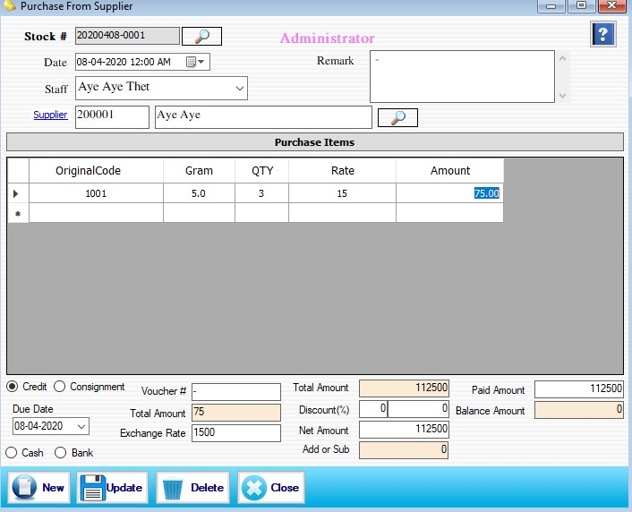

Purchase Stock Setup

- Transaction အောက်ရှိ Purchase Raw Form ကိုဖွင့်ပါ။
- နေ့စွဲတွင် လက်ရှိရောက်နေသော Date ကိုပြပေးမည် ဖြစ်သည်။
- တာဝန်ခံ ဝန်ထမ်းကို ရွေးချယ်ပါ။ Supplier ကိုရွေးချယ်ပါ။
- Original Code,Gram,QTY,Rate စသည်ဖြင့် လိုအပ်သည်များကိုဖြည့်စွက်ပါ။
- Supplier ထံမှဝယ်ဈေး၊ဘောင်ချာ၊ငွေချေမည့် ပုံစံတို့ကိုထည့်ပါ။
- ငွေပေးချေရာတွင် ဒေါ်လာနှင့်ပေးချေပါက Rate တွင် Gram နှုန်းထားကို ထည့်၍ Exchange Rate တွင် ဒေါ်လာပေါက်စျေးကိုထည့်လိုက်ပါက Total Amount ကို တွက်ချက်ပေးမည်ဖြစ်သည်။
- ထို Purchase Raw Form (Purchase From Supplier) သည် Supplier ထံမှ အဝယ်စာရင်းအား မှတ်ထားရန်သာြဖစ်သည်။ Software အတွင်းရှိမည်သည့် Transaction နှင့်မှ စပ်နွယ်မှု မရှိပါ။
- Data များဖြည့်စွက်ပြီးပါက Save Button ကိုနှိပ်၍ သိမ်းဆည်းနိုင်ပါသည်။
- သိမ်းဆည်းပြီးသား Data များအား ပြန်လည်ကြည့်ခြင်း၊ ပြင်ဆင်ခြင်းများပြုလုပ်ချင်ပါက Voucher No ၏ ဘေးတွင် ရှိသော မှန်ဘီလူး button ကိုနှိပ်ပြီးပြန်လည်ကြည့်ရှုပြင်ဆင်ချင်သော Purchase Item အား ရွေးချယ် ပြီးပြင်နိုင် ပါသည်။
- သိမ်းဆည်းပြီးသား ထည့်ပြီးသား Data များကို ဖျက်လိုလျှင် မှန်ဘီလူး button အားနှိပ်ပြီးရှာပါ။ ထို့နောက် မိမိဖျက်လိုသော Data ကို Delete Button ကိုနှိပ်၍ ဖျက်နိုင်ပါသည်။
- Purchase Item အသစ်ထည့်လိုပါက New Button ကိုနှိပ်ပြီး အသစ်ထည့်နိုင်ပါသည်။
- Purchase Raw Form အား အသုံးပြုပြီးပါက Close Button ကိုနှိပ်၍ ပိတ်နိုင်ပါသည်။
- Purchase Raw Form ရှိ Data များအား ပြန်လည်ကြည့်ချင်ပါက Report ထဲရှိ Purchase => Purchase From Supplier တွင် ပြန်လည်ကြည့်ရှုနိုင်ပါသည်။